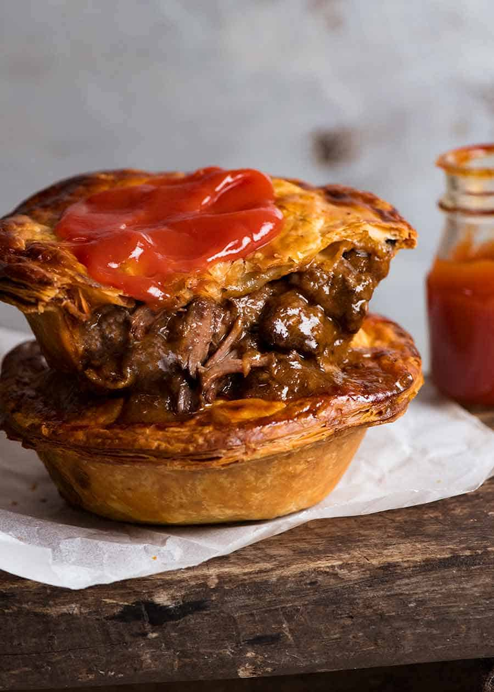
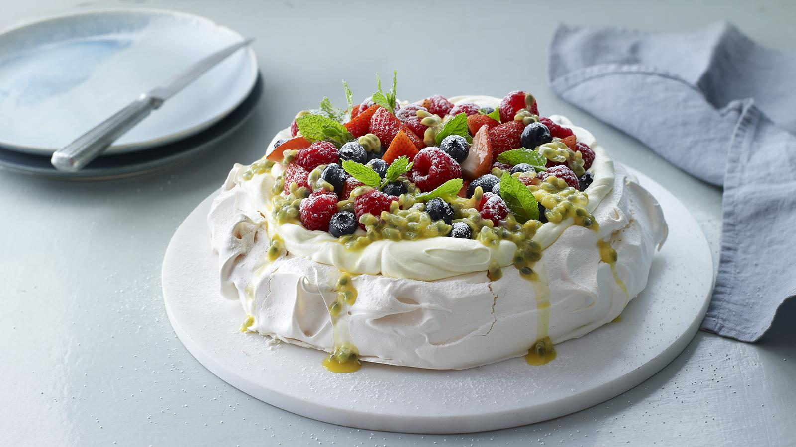
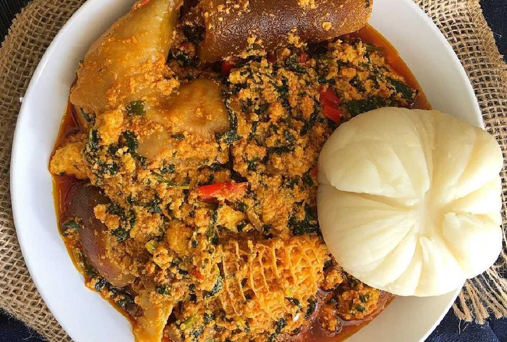
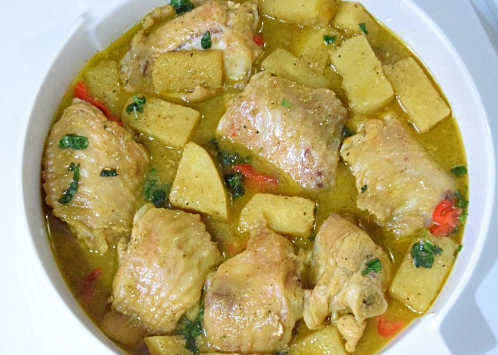
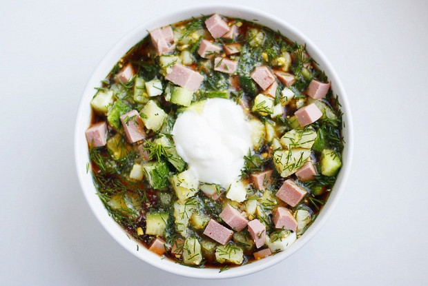

Recipe 1
Aussie Meat Pie
Story
An Aussie icon, this classic pie is made with a shortcrust base and a rich beef mince gravy.
Energy value
Calories
-
kcal
Proteins
417
g
Fats
20
g
Carbs
18
g
Time
 1.5h
1.5h
Portions
 4
4
Cooking instruction
- Heat oil in a saucepan over medium-high heat. Add onion. Cook for 3 minutes or until soft. Add mince. Cook for 4 minutes, stirring with a wooden spoon, or until browned.
- Mix cornflour and 1 tablespoon of stock to form a paste. Add remaining stock. Add stock, sauces and Vegemite to mince. Bring to the boil. Reduce heat to medium-low. Simmer for 8 minutes or until thick. Cool.
- Preheat oven to 220°C. Place a baking tray into oven. Grease 4 x 8cm base measurement pie pans.
- Cut 4 x 15cm circles from shortcrust pastry. Use to line bases and sides of pans. Fill with mince. Brush rims with water. Cut 4 x 15cm circles from puff pastry. Place over meat. Press to seal. Trim. Brush with egg. Season.
- Place pies onto hot tray. Bake for 20 to 25 minutes or until golden. Serve.
Ingredients
| Name | Volume |
|---|---|
| olive oil | 1 tbsp |
| Finely chopped onion | 1 |
| Lean beef mince | 500g |
| Cornflour | 1 tbsp |
| Beef stock | 3/4 cup |
| Tomato sauce | 3/4 cup |
| Worcestershire sauce | 2 tbsp |
| Barbecue sauce | 1 tbsp |
| Vegemite | 1 tsp |
| Frozen shortcrust pastry | 2 sheets |
| Frozen puff pastry | 2 sheets |
| Beaten egg | 1 |
Recipe 2
Pavlova
Story
Pavlova is a meringue-based dessert associated with summer time named after the Russian ballerina Anna Pavlova. The dessert is believed to have been created in honour of the dancer either during or after one of her tours to Australia and New Zealand in the 1920s. It has a crisp crust and soft, light inside, usually topped with fruit and whipped cream.
Energy value
Calories
460
kcal
Proteins
4
g
Fats
20
g
Carbs
64
g
Time
2.5h
Portions
6
Cooking instruction
- Preheat oven to 120°C. Line an oven tray with foil. Brush with melted butter and dust with cornflour, shaking off excess. Mark a 24cm-diameter circle on foil.
- Use an electric mixer to whisk egg whites in a clean dry bowl until soft peaks form. Gradually add sugar, 1 tablespoon at a time, beating well after each addition, until meringue is thick and glossy and sugar dissolved. Rub a little meringue between fingers. If still "gritty" with sugar, continue to whisk until sugar dissolves. Add cornflour, vinegar and vanilla and whisk until just combined. Spoon meringue onto the foil, using the marked circle as a guide. Smooth sides and top of pavlova. Use a small spatula to forms little peaks around edge of pavlova. Bake in oven for 1 1/2 hours or until pavlova is dry to the touch. Turn off oven. Leave pavlova in oven with the door ajar to cool completely. When completely cold, transfer to serving plate or store in an airtight container until required.
- Use an electric mixer to whisk the cream and icing sugar in a medium bowl until firm peaks form. Spoon cream onto the top of pavlova. Pour lime juice into a ceramic or glass bowl. Add banana slices and toss to coat with juice. Drain. Decorate pavlova with banana, kiwifruit, strawberries, rasberries, blueberries, passionfruit and lime rind.
Ingredients
| Name | Volume |
|---|---|
| Eggs, separated | 6 |
| Caster sugar | 270g |
| Cornflower | 2 tsp |
| White vinegar | 1 tsp |
| Vanilla extract | 1/2 tsp/td> |
| Thickened cream | 300ml |
| Pure icing sugar, sifted | 2 tbsp |
| Juice of limes | 2 |
| Finely shredded rind of lime | 2 |
| Lady finger bananas, thinly sliced diagonally | 2 |
| Golden kiwifruit, peeled, thinly sliced | 3 |
| Strawberries, halved | 250g |
| Rasberries, halved | 250g | Blueberries, halved | 150g | Pulp of passionfruit | 2-3 |
Recipe 1
Pounded Yam and Egusi soup
Pounded Yam and Egusi soup
Pounded Yam and Egusi soup is arguably the most popular traditional dish in Nigeria (West Africa). Egusi is made of fat- and protein-rich seeds of certain cucurbitaceous plants (squash, melon, gourd) one of the most popular soups used for a variety of occasions across the African continent and beyond.
Energy value
Calories
350
kcal
Proteins
400
g
Fats
400
g
Carbs
350
g
Time
1h
Portions
5
Cooking procedure
- With mild heat, fry the chillies, the Egusi powder.
- Add the Maggi cubes, ginger, tomatoes and salt as prefered.
- Marinade and fry the meat in oil with onion, garlic and spring onions.
- Transfer to the soup and cook for 20 minutes.
- Peel the yam into tiny cubes, wash and load into a blender
- Blend into a smooth paste, transfer into a pot and cook on medium heat while stirring till the paste is smooth.
- Enjoy your delicious Pounded Yam and Egusi soup!!!
Ingredients
| Name | Volume |
|---|---|
| Blended onions | 100 g |
| Fresh chillies | 50 g |
| Sliced tomatoes | 100g |
| Maggie cubes | 2 |
| Garlic | 2 cloves |
| Ginger | 1-teaspoon |
| Egusi powder | 150g |
| Palm oil | 90ml |
| Spring onions (chopped) | 2 stems |
| Yam (flour or chopped) | 500g |
| Salt | to taste |
Recipe 2
Yam and Turkey Pepper soup
Yam and Turkey Pepper soup
Great recipe for Turkey yam pepper soup. Everyone want to make a soup when down with cold so I believe this is the Perfect Meal For A Rainy Weekend. I would also recommend this especially to the nursing mothers.
Energy value
Calories
350
kcal
Proteins
400
g
Fats
300
g
Carbs
400
g
Time
45
min
Portions
3
Cooking procedure
- Wash and transfer the turkey pieces into a pot, add salt, Knorr chicken seasoning, grated ginger, chopped onions.
- Mix thoroughly, then steam on low heat for 5 minutes…
- Now, add the chopped yam, enough water to cover, then cook for 15 minutes.
- Add the scotch bonnet, ground pepper, crayfish and black pepper, then cook till both yam and turkey are soft.
- Then add the scent leaves/basil leaves, simmer for 2 minutes..
- All done!
So, will you be trying this easy Turkey and Yam Pepper soup recipe? If so, do let me know how you get on.
play_circle_filled watch a videoIngredients
| Name | Volume |
|---|---|
| Turkey | 700 g |
| Chopped Yam | 500 g |
| Pepper Soup Spice | 3-teaspoon |
| Knorr chicken seasoning | 2 |
| Scotch Bonnet Peppers | 100 g |
| Ginger | 1-teaspoon |
| Crayfish powder | 100 g |
| Black pepper | 1-teaspoon |
| Onions (chopped) | 100 g |
| Salt | to taste |
Recipe 1
Olivier

Story
Olivier salad is a traditional salad dish in Russian cuisine, which is also popular in other post-Soviet countries and around the world.
Energy value
Calories
417
kcal
Proteins
16
g
Fats
30
g
Carbs
21
g
Time
1h
Portions
10
Cooking instruction
- Boil the potatoes and carrots until tender. Boil the eggs separately.
- Peel the potatoes and carrots. Cut everything into small cubes.
- Mix everything up and dress with mayonnaise and sour cream.
Ingredients
| Name | Volume |
|---|---|
| Potato | 650 g |
| Carrot | 450 g |
| Pickles | 200g |
| Canned green peas | 1 can |
| Egg | 6 |
| Sausage | 500g |
| Sour creme | 100g |
| Mayo | 200g |
| Salt | to taste |
Recipe 2
Okroshka
Story
Recipes for okroshka appeared at the dawn of Russian culinary literature, at the end of the 18th century, in particular, in Nikolai Osipov's work "Ancient Russian Hostess, Klychnitsa and Stryapukha".
Energy value
Calories
305
kcal
Proteins
12
g
Fats
13
g
Carbs
30
g
Time
30
min.
Portions
6
Cooking instruction
- Peel and boil the potatoes until tender. Leave to cool.
- Boil the eggs, cool down and peel them.
- Cut the cucumbers, eggs and potatoes into cubes. Finely chop the dill. Mix all the ingredients in a salad bowl.
- Season with salt and pepper. Put them on a plate.
- Pour cold kvass, sprinkle with greens. Serve chilled with sour cream.
Ingredients
| Name | Volume |
|---|---|
| Young potatoes | 500 g |
| Cooked sausage | 250 g |
| Egg | 3 |
| Sour cream | to taste |
| Cucumbers | 3 |
| Salt | to taste |
| Kvas | 2l |
| Dill | 50g |